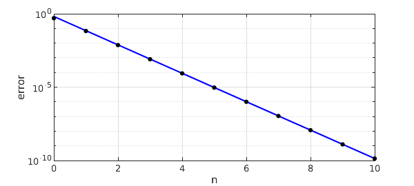
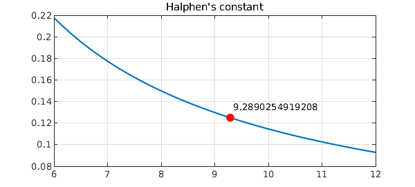

A well-known problem in approximation theory is, how well can $e^x$ be approximated in the infinity norm on the infinite interval $(-\infty,0]$ by rational functions of type $(n,n)$? To three places, the first few approximation errors are these:
-
Type $(0,0)$: error = $0.500$
-
Type $(1,1)$: error = $0.0668$
-
Type $(2,2)$: error = $0.00736$
-
Type $(3,3)$: error = $0.000799$
-
Type $(4,4)$: error = $0.0000865$
-
Type $(5,5)$: error = $0.00000934$
-
Type $(6,6)$: error = $0.000001008$
-
Type $(7,7)$: error = $0.0000001087$
-
Type $(8,8)$: error = $0.00000001172$
As $n$ increases to infinity, it is known that the asymptotic behavior is
$$ \mathrm{error} \sim 2 C^{-n-1/2}, $$
where $C$ is a number known as Halphen's constant with the following approximate numerical value:
halphen_const = 9.289025491920818918755449435951
halphen_const = 9.289025491920819
This result comes from a sequence of contributions between 1969 and 2002 by, among others, Cody, Meinardus and Varga; Newman; Trefethen and Gutknecht; Carpenter, Ruttan and Varga; Magnus; Gonchar and Rakhmanov; and Aptekarev. For a discussion, see Chapter 25 of [5].
Here is a plot showing that the asymptotic behavior matches the actual errors very closely even for small $n$:
n = 0:10;
err = [.5 .0668 7.36e-3 7.99e-4 8.65e-5 9.35e-6 ...
1.01e-6 1.09e-7 1.17e-8 1.26e-9 1.36e-10];
model = 2*halphen_const.^(-n-.5);
hold off, semilogy(n,model,'-b')
hold on, semilogy(n,err,'.k','markersize',14), grid on
xlabel n, ylabel error

One way to characterize Halphen's constant mathematically is that it is the inverse of the unique positive value of $s$ where the function
$$ \sum_{k=1}^\infty \frac{k s^n}{1-(-s)^n} $$
takes the value $1/8$. This is an easy computation for Chebfun:
s = chebfun('s',[1/12,1/6]);
f = 0*s; k = 0; normsk = 999;
while normsk > 1e-16
k = k+1;
sk = s^k;
f = f + k*sk/(1-(-1)^k*sk);
normsk = norm(sk,inf);
end
hold off, plot(1/s,f), grid on
h = 1/roots(f-1/8);
hold on, plot(h,1/8,'.r','markersize',24)
title('Halphen''s constant')
text(h,.135,sprintf('%16.13f',h))

Halphen's constant appears more generally than in approximation of $e^x$. Stahl and Schmelzer generalized it to a number of perturbed exponential functions and Nakatsukasa and Trefethen showed that it also governs the accuracy of rational approximations of $x^n$ on $[-1,1]$ [3]. The latter effect is explored in the Chebfun example "Rational approximation of monomials".
References
-
A. J. Carpenter, A. Ruttan, and R. S. Varga, Extended numerical computations on the "1/9" conjecture in rational approximation theory, in P. Graves-Morris, E. B. Saff, and R. S. Varga, eds., Rational Approximation and Interpolation, Lecture Notes in Mathematics 1105, Springer, 1984.
-
A. A. Gonchar and E. A. Rakhmanov, Equilibrium distributions and degree of rational approximation of analytic functions, Math. USSR Sbornik, 62 (1989), 305-348.
-
Y. Nakatsukasa and L. N. Trefethen, Rational approximation of $x^n$, Proc. AMS, 146 (2018), 5219-5224.
-
H. Stahl and T. Schmelzer, An extension of the '1/9' problem, J. Comp. Appl. Math., 233 (2009), 821-834.
-
L. N. Trefethen, Approximation Theory and Approximation Practice, Extended Edition, SIAM, 2019.